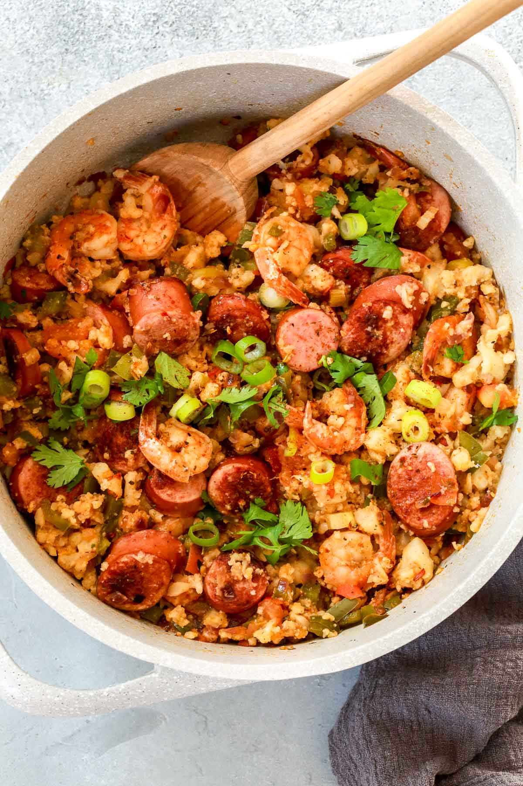

Cajun Jambalaya

Description:
This is a recipe for making spicy cajun jambalaya.
Ingredients:
- 1 lb boneless/skinless chicken breast, cubed
- 4 tsp Cajun seasoning with salt
- 2 tsp neutral oil (canola)
- 12 ounces andouille or smoked sausage, cut into coins
- 1 cup diced yellow onion
- 1 cup diced green bell pepper
- 1/2 cup diced celery
- 4 cloves garlic, minced
- 2 cups long-grain white rice, rinsed until water drains clear
- 2 tsp Worcestershire sauce
- 2 dried bay leaves
- 1 tsp dried thyme
- 1/2 tsp ground black pepper
- 3 cups chicken broth OR 3 cubes chicken bouillion dissolved in 3 cups water
- 4 medium scallions, thinly sliced
Steps:
- In medium bowl, combine chicken with 2 tsp cajun seasoning and toss
- Heat oil in pot on medium heat. Add chicken and brown all sides, 8-10 minutes. Set aside.
- Add sausage to pot and cook until browned, about 5 minutes. Transfer to chicken.
- Add onion, bell pepper, and celery to the pot. Saute over medium heat until tender and translucent, 5-6 minutes.
- Add garlic, rice, Worcestershire, bay leaves, thyme, black pepper, chicken brother, and 2 tsp cajun. Add chicken and sausage back to pot, stir. Bring to boil on high heat.
- Reduce heat to low and simmer while covered until rice is fully cooked and fluffy, about 30 minutes. If rice is still wet, cook uncovered another 5-10 minutes.
- Serve garnished with scallions.